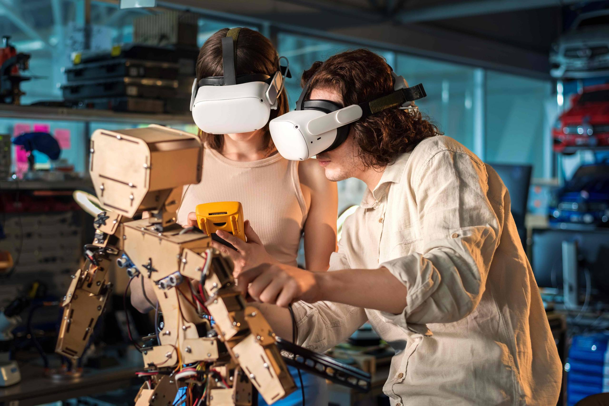

Revolusi 4.0
Tibalah saatnya kita memasuki revolusi industri 4.0 yaitu era yang ditandai dengan adanya konektivitas manusia, data, dan mesin dalam bentuk virtual atau dikenal dengan istilah cyber physical. Perkembangan revolusi industri membawa perubahan yang sangat cepat dengan tujuan mulia menciptakan kualitas kehidupan yang lebih baik. Pada era industri 4.0 ini ada pergeseran trend inovasi ke arah teknologi digital.
Di era revolusi industri 4.0 memungkinkan otomatisasi di semua bidang untuk mencapai produktivitas yang efektif dan efisien. Penerapan sistem informasi rantai pasokan digital ke seluruh unit kerja akan meminimalkan peran manusia sebagai operator. Secara umum di era industri 4.0 ini peran tenaga manusia berubah dari peran operator menjadi seorang ahli dengan kompetensi yang tinggi.
Revolusi industri 4.0 berasal dari sebuah proyek yang diprakarsai oleh pemerintah jerman untuk mempromosikan komputer manufaktur. Revolusi generasi empat ini ditandai dengan munculnya komputer canggih, robot pintar, kendaraan tanpa kemudi, yang memungkinkan manusia lebih mengoptimalkan fungsi otak.
Peluang di zaman revolusi industri 4.0
Di era industri saat ini akan banyak peluangpeluang yang bisa dikembangkan. Ini semua bergantung pada kreativitas untuk mencari dan menemukan peluang yang bertebaran di bidang industri masing-masing.
Di era industri saat ini akan banyak peluangpeluang yang bisa dikembangkan. Ini semua bergantung pada kreativitas untuk mencari dan menemukan peluang yang bertebaran di bidang industri masing-masing.
Ancaman di zaman revolusi industri 4.0
Di sisi lain pada saat yang sama kehadiran revolusi industri 4.0 akan mengancam lini usaha yang ada, karena profesi dan lapangan kerja digantikan oleh sistem otomasi dan robot. Penggunaan tenaga robot berdampak pada biaya yang lebih murah, efektif dan efisien.
Pada era industri 4.0, manusia akan hidup di dalam ketidakpastian, oleh karena itu kita harus memiliki kemampuan untuk memprediksi masa depan. Kita harus memiliki kemampuan untuk merespon perubahan dengan arif dan bijaksana.
Kehadiran industri 4.0 akan mengancam keberadaan perusahaan-perusahaan yang telah mapan. Disruptif teknologi hadir begitu cepat dan sudah banyak kisah perusahaan besar yang tumbang dengan meninggalkan kesedihan yang mendalam.
Kecepatan pelaku bisnis dalam merespon suatu perubahan sangat menentukan kemajuan untuk masa mendatang. Persaingan bisnis tidak lagi kasat mata, karena teknologi digital mampu menembus tatanan yang ada. Secara fisik tidak terlihat adanya pesaing, namun kenyataannya secara virtual banyak sekali pesaing.
Rahasia sukses di era revolusi industri 4.0
Apa yang harus kita persiapkan dalam menghadapi revolusi industri 4.0?. Seperti yang kita ketahui bahwa model industri 4.0 adalah kombinasi gabungan dari beberapa inovasi teknologi terbaru seperti teknologi informasi dan komunikasi, sistem jaringan, big data dan cloud computing, virtualisasi, dll.
Oleh sebab itu, mempersiapkan diri dengan meningkatkan kompetensi di bidang teknologi digital adalah sebuah keniscayaan dan keharusan. Selain itu secara mental kita harus mempersiapkan ketahanan, kemampuan beradaptasi, keterampilan berpikir kritis dan kemampuan berinovasi.